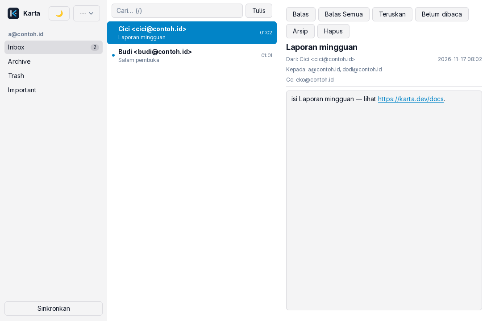
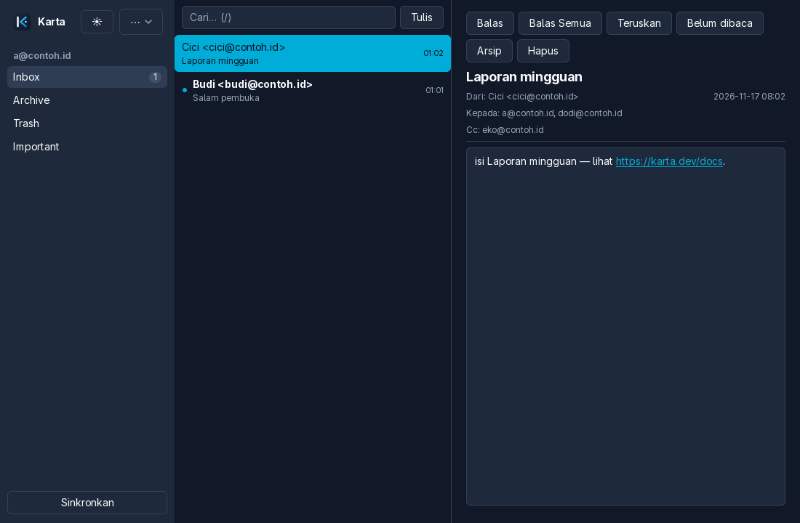

Karta
Pure Native Desktop Email Client
Email client desktop ringan berbasis Go dan GPU UI (mygo/ui) tanpa Electron atau WebView. Dilengkapi pencarian SQLite FTS5 instan, IMAP IDLE, login Google satu klik, dan penyimpanan kredensial di OS Keyring.

